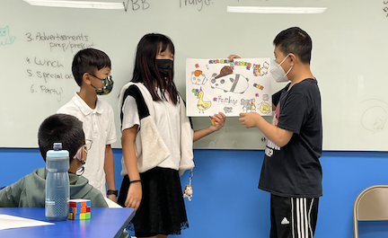
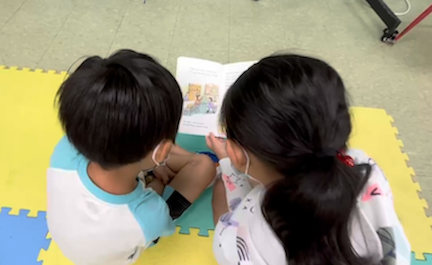
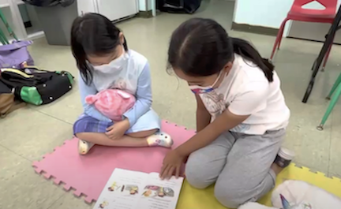

EH
WORK
ABOUT ME
MORE
RESUME
Yale Church Summer School
Instructor
Conducted weekly lessons and assessments of 100+ students in reading and math using the NY State curriculum
Collaborated with other instructors on activities, including games, arts and crafts, and songs to increase student engagement
Organized weekly leadership meetings to analyze student feedback and propose changes in weekly lessons
Produced a
video presentation
through the creation of a screenplay (Microsoft Office) and film editing (Davinci Resolve)

Advertisement Project Presentations

2nd and 5th Grade Reading Buddies

2nd and 5th Grade Reading Buddies